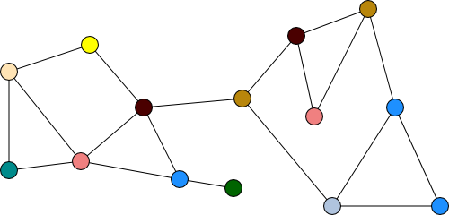
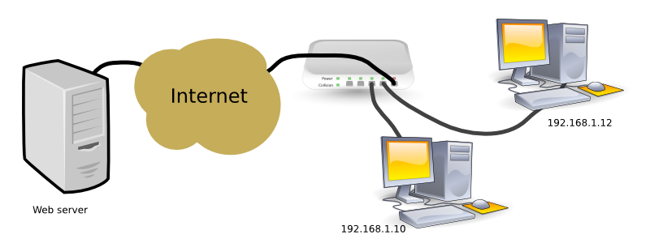
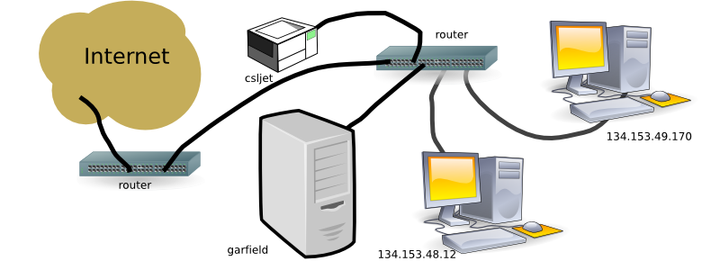
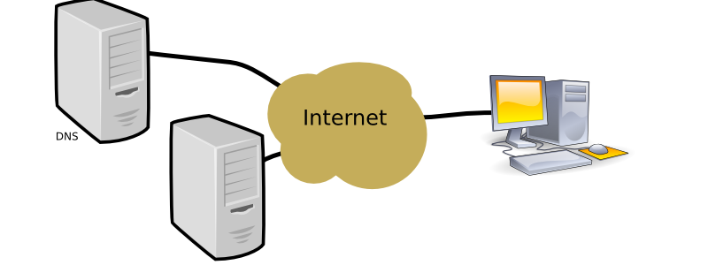

Many interesting and wide spread applications depend on the Internet (process to process communication) for their functionality. Examples include:
Most of these applications follow the client/server architecture. Bittorrent follows the peer-to-peer architecture.
The client/server architecture separates the application into a:
The Internet is composed of a network of interconnected computers and routers. A router is a specialized computer that only passes messages between its connections.

Each connected computer is identified by its IP (Internet Protocol) number. IPv4 numbers require 32 bits. The IP number is used to route messages between nodes in the network. IPv6 supports 128 bit addresses.

The switch connecting the PC to the internet usually performs NATing.

Most of MUN's nodes have a real IP address.
The complexity of the internet can be ignored for most network programming.

DNS servers map symbolic names, preferred by humans, to IP addresses.
| Layer-n |
| Layer-(n-1) |
| Layer-(n-2) |
| ... |
| Layer-1 |
The software that runs the Internet is based on a layered architecture. The software is partitioned into packages grouped into layers. The components are only coupled to their adjacent layers. Layer-n only knows about layer-(n-1). Layer-i, where i is in the middle, knows about layer-(i+1) and layer-(i-1).
Layered architectures are very common in software systems. The system calls provided by an operating system is usually the bottommost layer. System libraries are built upon system calls, and end user application are build on system libraries.
In Java, the JVM is the bottommost layer, the Java API is next, the user's application is the topmost layer.
| Application |
| Transport |
| Network |
| Data link |
| Physical |
The Internet is often described as a 5 layered architecture.
Home, academic, and business networks are connected with: hubs, switches, routers and gateways.
Certain servers are assigned to well known port numbers. Some examples are:
On Unix systems, the file /etc/services contains a list of well known services and port numbers.
The general form for a URL is:
protocol://host/path#name?query
MIME: Multipurpose Internet Mail Extensions
MIME was initially created for the transmission and reception of non-text e-mail (e.g., images, programs ...).
When a web server transmits a file to a browser using the HTTP protocol it also sends the MIME type of the file. The MIME type controls how the browser handles the file. All files must have an associated MIME type, the browser will prompt the user if the MIME type is unknown.
A list of registered mime types is maintained by the Internet Assigned Numbers Authority (IANA). A mine type is composed of two parts separated by a slash. The first part gives the general media type (e.g., text, image) and the second part gives the specific format (e.g., text/html, text/plain, image/jpeg, image/png).
The MIME type for a HTML file/document is:
text/html
A plain text file is:
text/plain
A file containing HTML tags, but sent as text/plain would be displayed as a straight text file.
The XHTML MIME type is
application/xhtml+xml
Any XML document, including XHTML, can also be described with these MIME types.
application/xml or text/xml
Mime types for common image formats are:
image/bmp
image/gif
image/jpeg
image/png
image/tiff
When a browser reads a local file it uses the file extension to determine its MIME type. Under Linux the file, /etc/mime.types, specifies the mapping between file extensions and MIME types. A subset of the contents is:
application/ogg ogg
application/x-tex tex
application/xhtml+xml xhtml xht
application/xml
application/xml-dtd
application/xml-external-parsed-entity
application/zip zip
audio/mpeg mpga mp2 mp3
audio/x-pn-realaudio ram rm
audio/x-wav wav
image/bmp bmp
image/gif gif
image/jpeg jpeg jpg jpe
image/png png
image/tiff tiff tif
model/vrml wrl vrml
multipart/form-data
multipart/mixed
text/css css
text/html html htm
text/plain asc txt
text/sgml sgml sgm
text/x-setext etx
text/xml xml xsl
video/mpeg mpeg mpg mpe
video/quicktime qt mov
video/x-msvideo avi